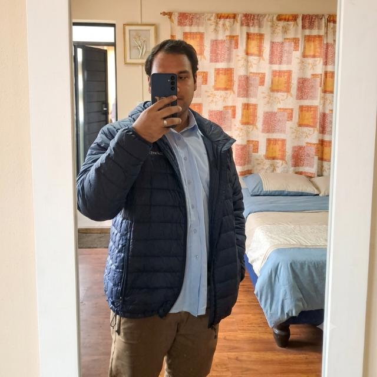

Aaron Martinez | WDD 130

Hello! My name is Aaron Martinez and I am from Duran, Ecuador. I enjoy playing soccer and playing videogames. I am currently studying Software Development at BYU Idaho with Pathway. I am so excited to learn and practice my skills to programing. I am looking to participate in a software development prototype and prepare myself for the future by being part of a development team. My family consists of six people: my dad, my mom, and my three brothers all of us children are boys, which is crazy! I also have my two paternal grandparents and my maternal grandfather, as my maternal grandmother passed away in 2023. I love my family dearly; they are the fundamental pillar that keeps me moving forward in my professional development as a software designer. When I was a child, I thought I would become a doctor until I realized I was terrified of the sight of blood, haha. When I was ten, I discovered the world of video games and downloading them onto the computer; that sparked a strong passion for computers and led me to decide to study something related to them in the future. I love programming the process of thinking, problem solving, creating, and writing code. I know it might sound a bit unusual, but I genuinely enjoy studying and working with computers.
- 1.Salt Lake Temple
- 2.Guayaquil Ecuador Temple
- 3.Montevideo Uruguay Temple